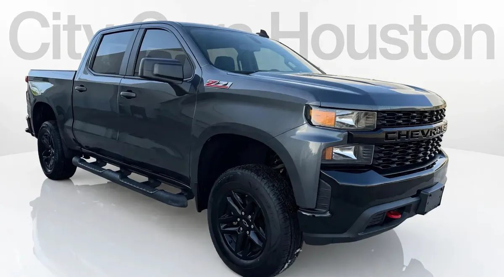

2021 Chevrolet Silverado Custom
Gray • ID CCH-547

1/1General
| Year | 2021 |
|---|---|
| Make | Chevrolet |
| Model | Silverado Custom |
| Type | Truck |
| Color | Gray |
| Mileage | 65,000 miles |
| Drivetrain | To be confirmed |
Model specifications
| Engine | more common: 5.3L EcoTec3 V8 (355 hp / 383 lb-ft). options: 2.7L Turbo 4-cyl (310 hp / 348 lb-ft); 4.3L V6 (285 hp / 305 lb-ft); 3.0L Duramax diesel 6-cyl (277 hp / 460 lb-ft); 6.2L V8 (420 hp / 460 lb-ft) |
|---|---|
| Horsepower | 355 (5.3L V8); 420 (6.2L V8); 310 (2.7L Turbo); 277 (3.0L Duramax); 285 (4.3L V6) |
| Torque | 383 lb-ft (5.3L V8); 460 lb-ft (6.2L V8 and 3.0L Duramax); 348 lb-ft (2.7L Turbo); 305 lb-ft (4.3L V6) |
| Transmission | 6-, 8- or 10-speed automatic (varies depending on unit) |
| Model drivetrain | 4x2 (RWD) or 4x4 (varies depending on unit) |
| Fuel economy (MPG) | City: 16 (5.3L V8); 23 (3.0L Duramax). Highway: 22 (5.3L V8); 33 (3.0L Duramax) |
| Fuel | Gasoline (diesel optional on some units) |
| Max towing | 13,300 (6.2L V8 with package Max Trailering); 11,500 (5.3L V8) |
| Seats | 6 |
| Body style | Pickup (truck cab simple/doble) |
Typical figures for this year and model, taken from public sources (manufacturer, KBB, Edmunds). The dealer confirms the exact engine, drivetrain and equipment of this unit.
Great for
For anyone who needs a truck for work and everyday driving.
Year, mileage and features come from the inventory data; confirm this unit's exact details with the dealer. This sheet shows no prices: the dealer provides them in writing.